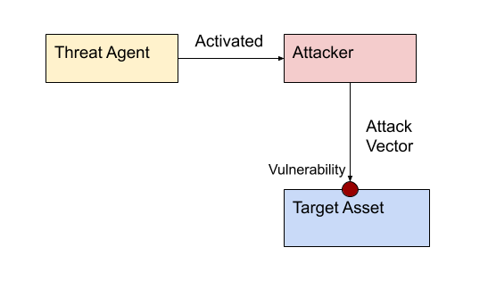
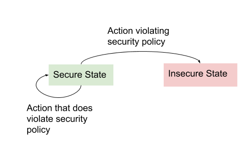
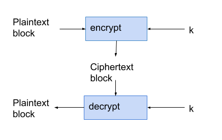
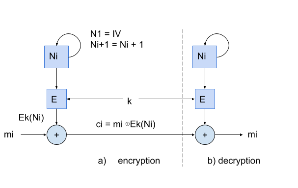

Security Notes
Cybersecurity Notes and Definitions.
Notes on various concepts, defintions,...
Security Notes.
Basic Concepts
Define Confidentiality
the property of non-public information remaining accessible only to authorized parties, whether stored or in transit
Define Data Integrity
the property of data, software, or hardware remaining unaltered except by authorized parties
Define Authentication
assurance that a principal, data, or software is genuine relative to expectations
Define Authorization
the property of computing resources being accessible only to authorized entities
Define Availability
the property of information, services, and computing resources remaining accessible for authorized use
Define Accountability
the ability to identify principals responsible for past actions
Repudiation
Repudiation - credibly deny previous commitments or actions
If repudiation is possible then accountability has not been achieved. If transaction evidence or logs are implemented properly then there are records and repudiation is not possible
If repudiation is possible then accountability has not been achieved. If transaction evidence or logs are implemented properly then there are records and repudiation is not possible
Trusted vs Trustworthy
- Trusted - is an actor that has our trust whether it deserves it or not
- Trustworthy - is an actor that doesn't have our trust but is deserving of it
Privacy and Anonymity
- Privacy - information protection to prevent unauthorized disclosure
- Anonymity - a persons actions are not linkable to the their public identity
Security Policy
The design intent of a system's rules and practices, includes what is and what is not allowed. It may specify assets that need to be protected, specific users allowed to access and allowed means of access
Security Policies and States

Security Policies and States

Quantitative vs Qualitative Risk Assessment
Qualitative
- Compares risks relative to each other and ranks them
- Advantages: having a rank of each asset can help prioritize which areas need improvement
- Disadvantages: It is an estimation and could be wrong
Quantitative
- Estimate rarely possible in practice
- Numerical estimation of risk
- Advantages: A numerical value for risk could be valuable for shareholders, and for calculating the minimum risk
- Disadvantages: Can not be achieved/calculated accurately in practice
The risk equation
R = T x V x C
The risk equation - the expected loss due to harmful future events relative to an implied set of assets and over a fixed period of time
- P - the probability that a threat agent takes an action and successfully exploits a vulnerability
The risk equation - the expected loss due to harmful future events relative to an implied set of assets and over a fixed period of time
- T - threat information (the probability that particular threats are initiated by actors in a given period
- V - the existence of vulnerabilities
- C - asset value, and the cost or impact of an attack
- P - the probability that a threat agent takes an action and successfully exploits a vulnerability
Categorical and Capability Level Schemas
- Categorical Schema - classifies adversaries into named groups (ie. foreign intelligence, cyber-terrorists, organized crime, ..)
- Capability Schema - groups generic adversaries based on a combination of capability and intent, ie. weakest to strongest
Formal Security Evaluation vs Penetration Testing
Formal Security Evaluation:
- Third-party lab review
- Considerable cost and time
- done on the final form of the product or system
- recertification required when the smallest changes are made
- self-assessments
- involve customers or hired consultants
- finding vulnerabilities in deployed systems by demonstrating exploits
Black-box vs White-box testing
- White box: proceeds with the use of insights from design documents or source code
- Black box: procees without the use of insights from design documents or source code
STRIDE
- S - Spoofing - Attempt to impersonate a person or entity
- T - Tampering - unauthorized altering
- R - Repudiation - denying responsibility for past actions
- I - Information Disclosure - unauthorized release of data
- D - Denial of Service - impacting availability of service or quality of service, through actions that consume resources
- E - Escalation - obtaining of privileges to access resources typically referring to malware that gains a base level of access as a foothold and exploits vulnerabilites to extend this to gain greater access
Observability
- Testing would ideally confirm the absence of vulnerabilities - Negative Goal
- we not only want ro confirm that the functionality works as planned but that the exploits are also absent
- not observing had outcomes does not mean that they do not exist
Security Notes.
Cryptography Basics
Generic Cryptographic Notation
- Alice encrypts a message using E_k(m)=c
- Bob decrypts the message using m=D_k'(c)
Exhaustive Key Search
Upon intercepting a ciphertext c, is to go through all keys k from the keyspace K, parameterizing D with each k sequentially, computing each D_k(c) and looking for some meaningful result
Known Plaintext Attack
- Passive
- An adversary tries to recover plaintext (or the key), given access to the ciphertext alone
Ciphertext only attack
- Passive
- Given access to some ciphertext and its corresponding plaintext adversaries try to recover unknown plaintext
- adversaries try to recover unknown plaintext or the key from further plaintext
Chosen plaintext attack
- Active
- Allow adversaries to choose some amount of plaintext and see the corresponding ciphertext. Allows advanced analysis to defeat weaker algorithms
Chosen ciphertext attack
- Active
- For a fixed key, attackers can provide ciphertext of their choosing and recieve back the corresponding plaintext, try to deduce the secret key or other information sufficient to decrypt new ciphertext
One-time pads
- Advantage: it is considered unbreakable, as the key is as long as the original message, it is random and autogenerated, and destroyed after use
- Disadvantages: The need for absolute synchronization between sender and reciever, the need for an unlimited number of keys, and the pad can only be used once
- Why are they not used: The person who is sending the message must send the pad to the reciever securely, and if you have a reliable channel to send the key you might as well skip the one-time pad, and just use the channel
Stream Cipher
- Suitable when there is a need to encrypt plaintext one bit at a time (ie. when user-typed characters are sent to a secure site in real time)
- Use stream cipher because there is no requirements that the length of the text be a certain size
Mode-of-Operation
combine successive n-bit block operations such that the encryption of one block depends on the other blocks
ECB Mode of Operation
If a given key k is used to encrypt several identical plaintext blocks m_i then identical ciphertext blocks c_i result ECB does not hide such patterns. This information leak can be addressed by including random bits within a reserved field in each block but it is ineffecient and ackward.
CBC Mode of Operation

CTR Mode of Operation

Counter Mode: Message m=m1, m2, ..., mi is encrypted to yield ciphertext c=c1, c2, ..., ci, Blocks mi.ci are n bits.
E denotes a block cipher (encrypt operation) with block length n. CTR mode ECB encrypts an incrementing index (counter) to generate a keystream of blocks to XOR onto corresponding plaintext blocks. To reverse this process, decryption regenerates the same keystream using ECB encryption
Counter Mode: Message m=m1, m2, ..., mi is encrypted to yield ciphertext c=c1, c2, ..., ci, Blocks mi.ci are n bits.
E denotes a block cipher (encrypt operation) with block length n. CTR mode ECB encrypts an incrementing index (counter) to generate a keystream of blocks to XOR onto corresponding plaintext blocks. To reverse this process, decryption regenerates the same keystream using ECB encryption
Public key encryption vs Public-key signature scheme
- If Alice wants to send a message to Bob using public-key encryption, Bob's public key is used to encrypt and Bob's private key is used to decrypt
- If Alice wants to send a message to Bob using a public-key signature scheme, Alice's private key is used to sign and Alice's public key is used to verify
Hybrid Encryption
- Symmetric key algorithms are typically faster than public key algorithms
- Public-key methods are more convient for establishing shared secret keys between endpoints
- Hybrid: To send encrypted messages often between communication endpoints and k is then used in a symmetric-key algorithm for effecient "bulk encryption" of a payload message m
3 security properties provided by digital signatures:
- Data origin authentication: assurance of who originated (signed) a message or file
- Data Integrity: assurance that recieved content is the same as that originally assigned
- Non-repudiation: strong evidence of unique of origination making it hard for a party to digitally sign data and later successfully deny having done so
3 properties of cryptographic hash functions:
- Preimage resistance: For all possible hash value h, given h it should be infeasible to find any m such that H(m)=h
- Second preimage resistance: given any first input m1, it should be infeasible to find any distinct 2nd input m2 such that H(m1)=H(m2)
- Collision resistance: it should be infeasible to find any pair of distinct inputs m1, m2 such that H(m1)=H(m2), (When 2 distinct inputs hash to then same output value, we call it a collision)
Encrypt-then-MAC
- Provides integrity of ciphertext
- Plaintext integrity
- If the ciphertext is malleable we do not need to be considered since the MAC will filter out this invalid ciphertext
- The MAC does not provide any information on the plaintext since assuming the output of the cipher appears random, so does the MAC
MAC-then-Encrypt
- No integrity on the ciphertext, since we have no way of knowing until we decrypt the message whether it was indeed authentic or spoofed
- Plaintext integrity
- If ciphertext scheme is malleable it may be possible to alter the message to appear valid and have a valid MAC
- Here the MAC cannot provide any information on the plaintext either, since it is encrypted
MAC-then-Encrypt vs Encrypt-then-MAC
- Encrypt-then-MAC is generally better
- Any modifications to the ciphertext do not also have a valid MAC can be filtered out before decryption, protecting against any attacks on the implementation
- The MAC cannot also be used to infer anything about the plaintext
Secret key vs public key crytography
- Secret key: uses a single key for encryption and decryption, which means that the sender and the reciever must possess the same key
- Public-key: uses two keys: a public and private key - that are linked together mathematically. A user keeps the private key private, and shares their public key with others
Symmetric vs Asymmetric Encryption
- Symmetric: uses the same key for both encryption and decryption. Encryption: takes plaintext and key, and produces the ciphertext using substitution and permutation. Decryption: reverses the encryption process, produces the orginal plaintext from the key and the ciphertext
- Asymmetric: uses two keys: one for encryption and the other for decryption. The two keys are paired together mathematically such that if one key encrypts a message a message the other key can decrypt.
DES
- Data Encryption Standard
- The key is 64 bits (8 bytes) long. For each byte there is one parity bit, so the actual value of the key is only 56 bits
- DES contains initial and final permutation step that remaps the positions of the bits to achieve diffusion
- Between the permutation, DES performs 16 rounds of operations using 16 48-bit subkeys generated from the original 56 bit key
- For each round the input is the ciphertext from the previous round, and outputs ciphertext for the next round
- Decryption does the same process in reverse
AES
- Replaceement for DES
- block cipher
- input plaintext block is 128-bits
- the keylength is 128, 192, or 256 bits long
- keys considered long enough to defeat brute force attempts
- Each block of plaintext that AES operates on is represented as a square matrix called state array
- XORed with per-round key before going through multiple rounds of encryption
- Each round the the algorithm perform SubBytes, ShiftRows, and MixColumns on the state array, which represent substitution and permutation
- The transformed state array is XORed with the per-round key and passed as input to the next round
- The final round which excludes MixColumns Operation returns the ciphertext
- Decryption is the same process in reverse
Public Key Signatures
- Verification of Identity and Message Authenticity
- To sign message m, Alice uses her signing private key s_A to create a tag t_A=S_sA(m) and sends (m, t_A).
- Bob recieves the message (m', t'_A), and uses Alice's verification public key v_A to test whether t'_A is a matching tag for m' from Alice, by computing V_vA(m', t'_A)
- This returns valid if a match is confirmed, and invalid otherwise
Security Notes.
User Authentication
Online Guessing
- Guesses are sent to legitimate server
- Prevent with: rate limiting - setting a limit on the number of guesses before lockout
Offline Guessing
- No per-guess interaction with the server is required
- Prevent with: Salts, pepper, iterated hashing, MAC on passwords
Defeated password recovery
- attacker abuses password recovery mechanism to make a new password for your account instead of stealing the old one
- Prevent with security questions
Bypassing authentication interface
- gaining unauthorized access to software vulnerabilities or design flaws
- Prevent with up to date software, regular security testing
Password capture
- An attacker intercepts or observes passwords directly
- Prevent with encrypted traffic, educating the public
Advantages and Disadvantages of Passwords
Advantages
- Simple, easy-to-use and learn
- free, require no extra physical device to carry
- can be replaced if lost
- quick login times
Disadvantages
- Can be guessed and stolen very easily
- Finite keyspace
- User behaviour is predictable (non-uniform password distribution)
Password Salt
A password salt is a random k-bit value that is concatenated with the password before hashing. The salt is stored in plaintext. Prevents the usage of rainbow tables.
Pepper or secret salt
A pepper is like a regular salt except it is not stored. To verify the password for an account the system tries all salts in a deterministic order.
Iterated Hashing
The password is hashed k times. It is used to slow down attackers because an attacker must also perform the hashing k times in order to get the password.
Slowing down attackers: salts vs peppers vs iterated hashing
- Iterated hashing: by a factor of k (where k is the number of times the password is hashed)
- Salting: 2^t (where t is the length of the salt)
- Peppering: 2^R-1 (where R is the keyspace of the salts)
System Assigned Passwords:
- A randomly generated password
- Pros: It eliminates password bias, and minimizes guessability
- Cons: It decreases usability, user have a hard time remembering random strings
Targeted vs Trawling Scope:
- Targeted: attack specific pre-identified users
- Trawling: break into any account, by trying many or all accounts
Probability of Correct Guessing
- Probability of guessing the correct password:
- q=GT/R
- R - the guessing rate
- T - time
- G - guessing rate
Defensive Measures
- rate limiting - addresses online guessing, locks a user out after n attempts
- blacklisting - addresses online guessing, disallow most common, or simple passwords
- salt - address pre-computed dictionaries
- iterated hashing - addresses offline guessing, increases time per guess
- pepper - addresses offline guessing, increases time per guess
- MAC on password - addresses offline guessing, stolen hashfile no longer useful
Passkeys
Password-derived cryptographic keys - passkeys. Must be strong because they are subject to offline attacks, and require high-guessing resistance. Memory aids for passkeys - the first letters of words in a relatively long sentences.
Secret Questions for password recovery
- Cons: Space of potential answers is small, information is often publicly available (social media), peoples answers may change
- Pros: High usability, easy to implement
One time passwords
passwords are valid for one use only
Define Accountability
the ability to identify principals responsible for past actions
Define Accountability
the ability to identify principals responsible for past actions
Security Notes.
Operating System Security Basics
Define Accountability
the ability to identify principals responsible for past actions
Define Accountability
the ability to identify principals responsible for past actions
Define Accountability
the ability to identify principals responsible for past actions
Define Accountability
the ability to identify principals responsible for past actions
Define Accountability
the ability to identify principals responsible for past actions